Hello, and welcome to my personal portfolio! I'm a BS/MS Aerospace
Engineering student at Georgia Tech, completing my BS in 2027 and
MS in 2028. I'm interested in computational fluid dynamics (CFD),
CAD, and aerospace systems, with experience spanning simulation, design,
systems modeling, and computing. My work focuses on using
engineering software and computational tools to design and improve complex aerospace systems.
Built a MATLAB solver that selects subsonic or supersonic analysis
methods by Mach regime and computes aerodynamic coefficients for
parametric and optimization studies.
Selected analysis methods automatically by Mach regime.
Computed aerodynamic forces, moments, and coefficients.
Supported parametric studies and geometry optimization.
Investigated rotor performance in Earth and Mars atmospheric
conditions through a large CFD simulation campaign.
Stellar Flare Activity of the Hyades Cluster
Analyzed TESS light curves from the Hyades open cluster and built
flare frequency distributions to compare stellar activity across
observation cadence and Gaia BP-RP color.
Built a traceable SysML model connecting mission requirements, UAV architecture,
operating behavior, performance equations, and scenario-based feasibility analysis.
Combined spacecraft structural design and FEA with a MATLAB/Simulink
reaction wheel model for three axis attitude stabilization.
Reduced-Scale Wind Tunnel Design
Designed reduced-scale wind tunnel test conditions using
Reynolds number similarity to reproduce full-scale aerodynamic
behavior within facility operating constraints.
Designed and revised a 3D-printed altimeter payload bay, supported
manufacturing, and flight-tested the completed rocket to 119 ft against
a 125 ft target altitude.
I designed the chassis and drivetrain components for BallHawk,
a team-built autonomous soccer training robot that could collect and launch balls,
place cones, and move around the field. My work focused on creating the
structure that allowed those independently developed systems to fit
together in one coordinated SolidWorks assembly.
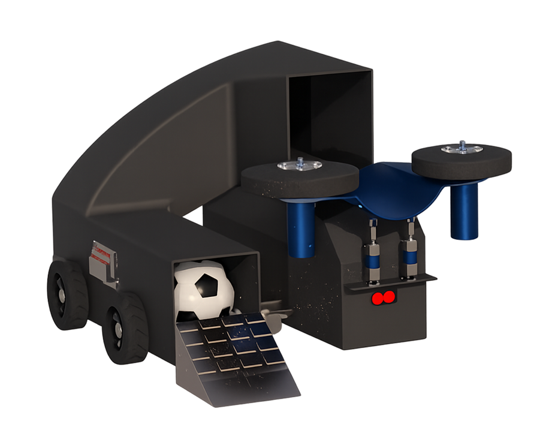
Final BallHawk team assembly combining the chassis, drivetrain, launcher,
ball collection system, cone pickup mechanism, and auxiliary hardware.
Designing around several interacting subsystems
BallHawk was designed as more than a mobile platform. The complete robot had
to support a drivetrain, ball collection mechanism, launcher, cone pickup arm,
sensors, and auxiliary hardware within one coordinated mechanical assembly.
That made packaging one of the main design challenges. The chassis needed to
provide enough space for each mechanism while still giving independently
developed subassemblies workable interfaces and preventing interference between
components.
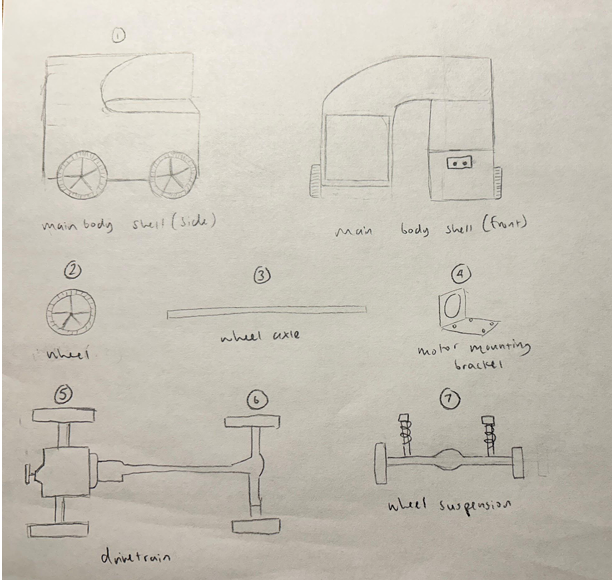
My preliminary concepts for the body shell, wheel and axle geometry,
drivetrain, suspension, and motor mounting bracket.
Turning the chassis concept into a complete CAD model
I developed the main body shell in SolidWorks around the larger system layout.
The chassis was not just an exterior enclosure; its geometry had to organize
the internal volume and provide the space and interfaces needed for the drivetrain
and the other mechanisms.
The final chassis incorporated the overall vehicle envelope, curved upper shell,
drivetrain openings, and the structural regions required to support the rest of
the mechanical assembly.
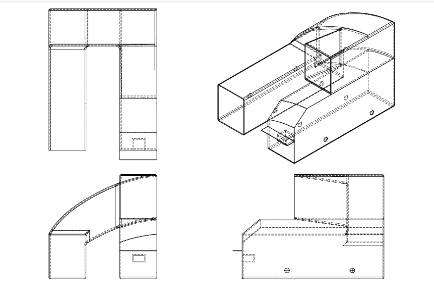
Engineering drawing of my final chassis design, showing orthographic and
isometric views of the body geometry.
Developing the drivetrain as a separate mechanical subassembly
I modeled the drivetrain as its own subassembly before integrating it into the
chassis. This made it easier to check the wheel geometry, axle placement, and
suspension relationships independently before the drivetrain was inserted into
the full vehicle.
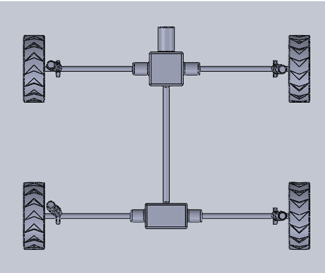
Drivetrain subassembly showing the wheel, axle, suspension, and drivetrain-body
components and their assembled configuration.
Designing the smaller interfaces that make the assembly work
Some of the most important geometry was much smaller than the chassis itself.
I also designed components such as the motor mounting bracket, where hole placement,
dimensions, and alignment directly affected whether the drivetrain could be
assembled as intended.
These parts required thinking about the interfaces between motors, supports,
axles, and the larger drivetrain structure rather than treating each component
as an isolated model.
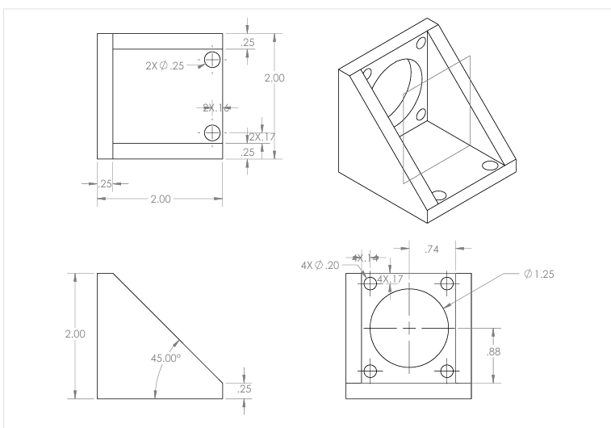
Dimensioned motor mounting bracket designed as part of my chassis and
drivetrain subsystem.
Making independently designed parts fit together
A major part of the project was making sure components created by different team
members could actually assemble into one machine. We repeatedly compared dimensions
and updated geometry so each subsystem had a workable location on the chassis.
For my subsystem, this meant confirming that the drivetrain geometry aligned with
the body-shell openings and available internal space before the complete assembly
was built.
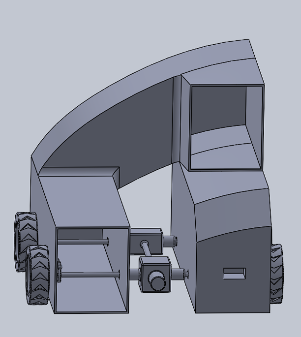
Drivetrain integrated through the chassis body, showing the relationship
between the wheel/axle system and the main shell.
Building the complete BallHawk assembly
Once the individual subsystems were complete, the team combined them into the
final SolidWorks assembly. The chassis became the common structure around which
the drivetrain, launcher, cone arm, collection ramp, sensor, compressor, battery
hardware, service panel, and other auxiliary components were positioned.
The complete model was a team result. Each team member developed a separate
subsystem and then integrated it into the shared assembly after the main dimensions
and interfaces had been coordinated.
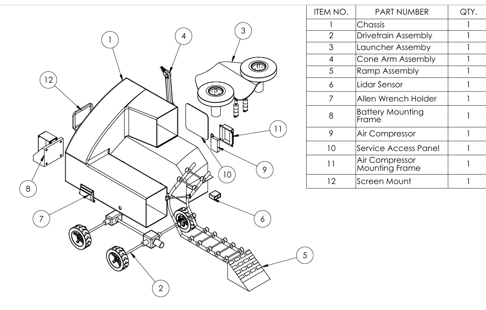
Team-level exploded assembly showing the major BallHawk subsystems and
their locations relative to the chassis.
From subsystem design to the final machine
By the end of the project, my original chassis and drivetrain concepts had become
part of a much larger coordinated mechanical assembly. The main challenge was not
modeling any single component, it was making the different pieces agree on dimensions,
interfaces, and available space so the overall system could be assembled coherently.
Takeaway: BallHawk gave me experience designing mechanical
components as part of a larger system rather than as isolated CAD models. My chassis
and drivetrain had to provide usable interfaces for several independently developed
mechanisms, which made dimensional coordination, assembly planning, and component
integration just as important as the individual part geometry.
I developed a high fidelity reacting LES model through a staged CFD workflow.
I began with industry provided baseline files, established a stable FGM solution,
carried that solution into a nonreacting LES, and then used the developed flowfield
to build the final reacting case.
Final reacting LES temperature field on a longitudinal combustor plane. The elevated
temperature region follows the developing reaction zone from the injector into the chamber.
MESH SCALE19M cells
CASE CAMPAIGN8 cases
REACTING RUN20 steps
TIME STEP1 × 10−7 s
01 · CASE DEVELOPMENT STRATEGY
Building the model one stage at a time
Rather than starting with the most expensive case, I increased the model fidelity in
steps. I reviewed the provided baseline files, rebuilt the chemistry and operating
setup in ANSYS Fluent 2025 R2, and stabilized the FGM solution before moving to LES.
This produced a developed nonreacting flow and mixing field that I could carry directly
into the reacting case. Using that solution as the starting point preserved the resolved
flow structures while reaction was introduced through the FGM progress variable.
02 · DOMAIN + MESH
Resolving the injector and combustor flowfield
I worked with an approximately 19 million cell combustor mesh and checked the domain,
zone assignments, connectivity, and local resolution before configuring combustion.
The mesh concentrates resolution around the small fuel injection passage and its
intersection with the larger chamber, where steep velocity, mixture, and thermal
gradients drive the downstream solution.
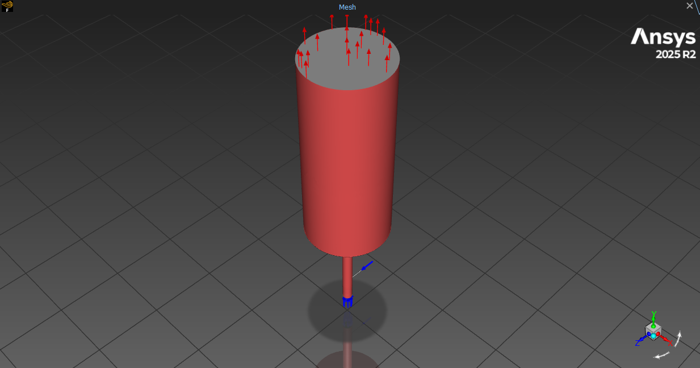
Computational domain with the small injector feeding the cylindrical combustor and
the outlet defined at the top of the chamber.
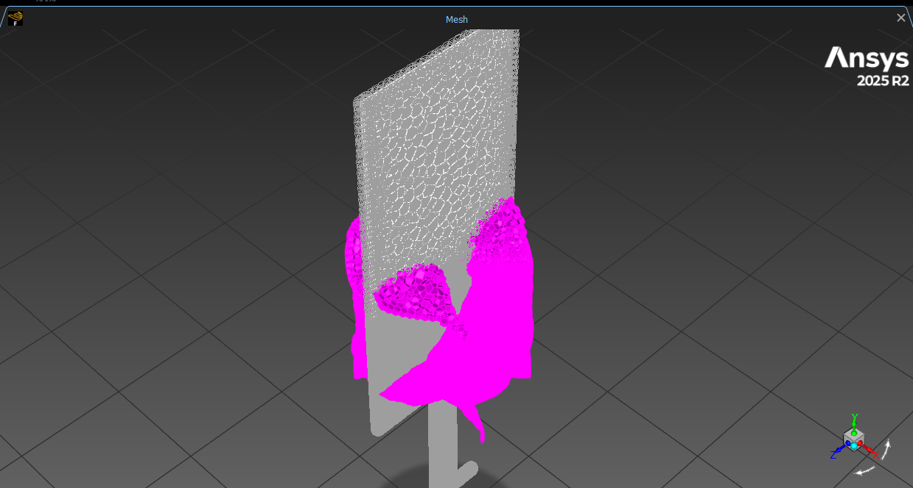
Center-plane mesh used to inspect internal resolution and zone interfaces.
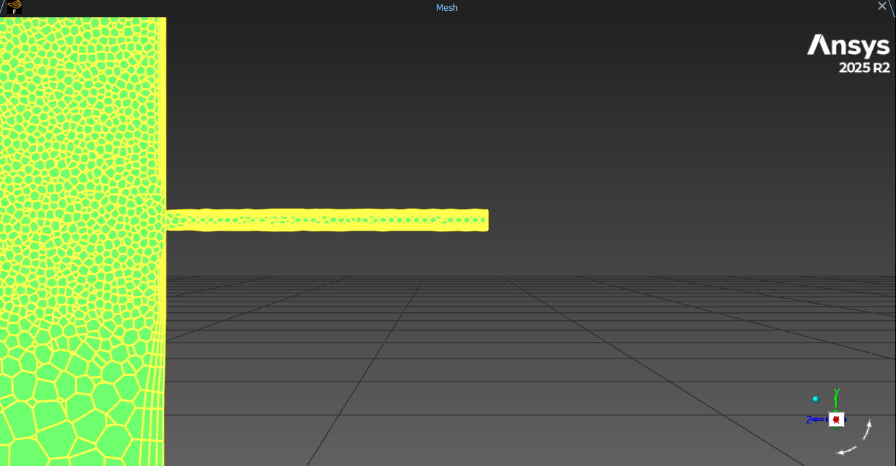
Local refinement at the narrow injector and chamber junction.
03 · PHYSICS + SOLUTION SETUP
Bringing the chemistry and turbulence models together
I configured hydrogen–air chemistry from the supplied CHEMKIN mechanism and generated
the flamelet/PDF data required by Fluent's partially premixed FGM formulation. The
operating setup used 627 K inlet streams and an operating pressure of 1,378,950 Pa.
Along the way, I corrected model, material, boundary condition, and file dependency
issues that kept the inherited cases from providing a reliable starting point.
Once the FGM case was stable, I changed the turbulence model from SST
k–ω to LES with the WALE subgrid scale model and used a transient
formulation. This gave the LES a developed starting field instead of asking the flow,
turbulence, and chemistry models to settle at the same time.
04 · NONREACTING LES BASELINE
Developing the flowfield before turning on reaction
The nonreacting FGM–LES case was the direct starting point for the final simulation.
It allowed the transient jet and chamber flow to develop while the progress variable
remained zero. Keeping reaction off during this stage separated flow development from
combustion initialization and gave me a clear baseline for comparison.
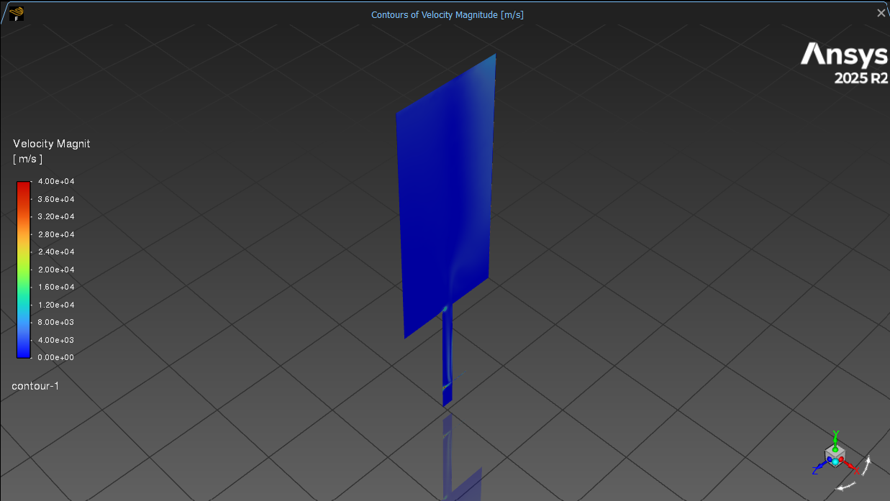
Nonreacting LES velocity magnitude through the injector and chamber.
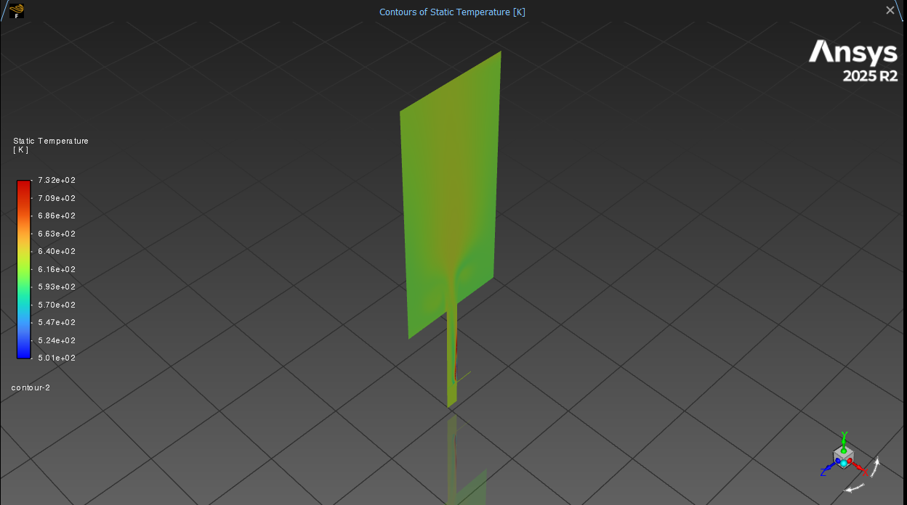
Baseline temperature field before the reacting solution was introduced.
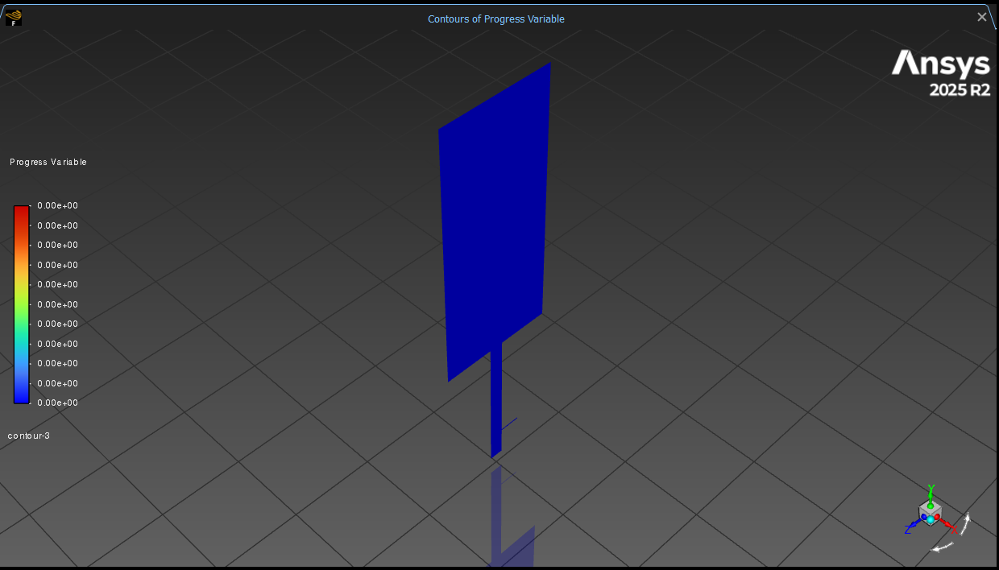
The zero progress variable field confirms that this case represents the developed
nonreacting LES state used to initialize the reacting branch.
05 · FULLY CONVERGED REACTING LES
Advancing the final reacting solution
I built the final reacting case directly from the nonreacting LES solution instead of
reinitializing the domain. After setting the combustor reaction state through
the FGM progress variable, I advanced the simulation for 20 time steps at
1 × 10−7 s per step to obtain the fully converged reacting LES result.
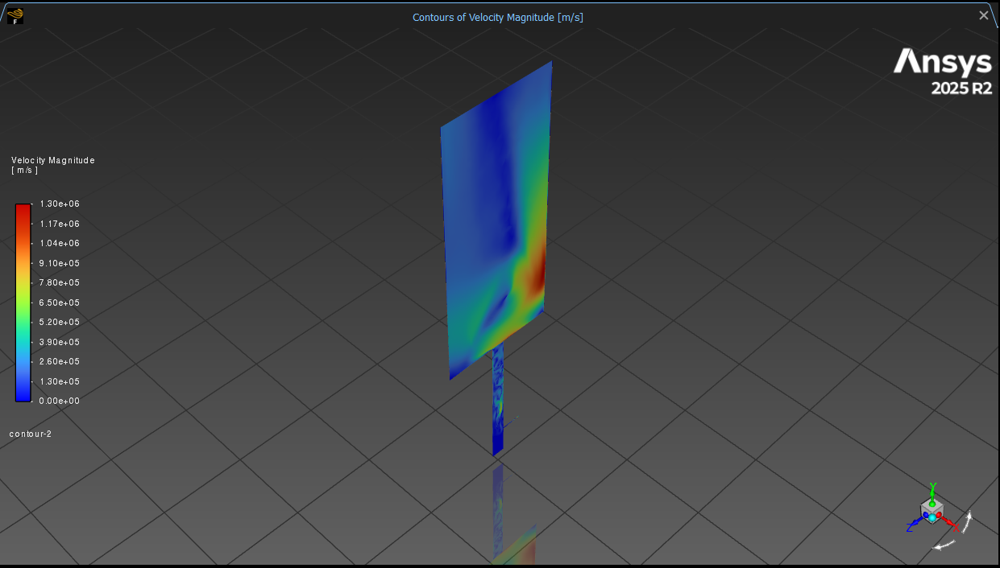
Reacting velocity field showing the jet-driven chamber flow structure.Reacting temperature field reaching approximately 2,790 K.
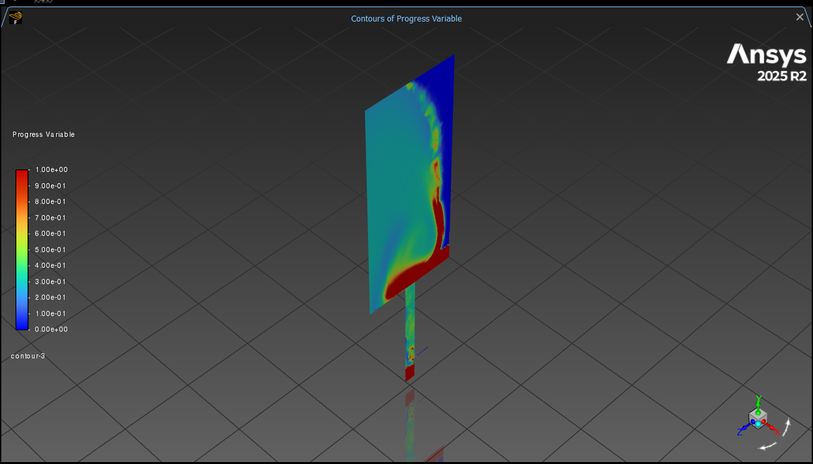
Progress variable from 0 to 1 identifying the reacted region and flame structure.
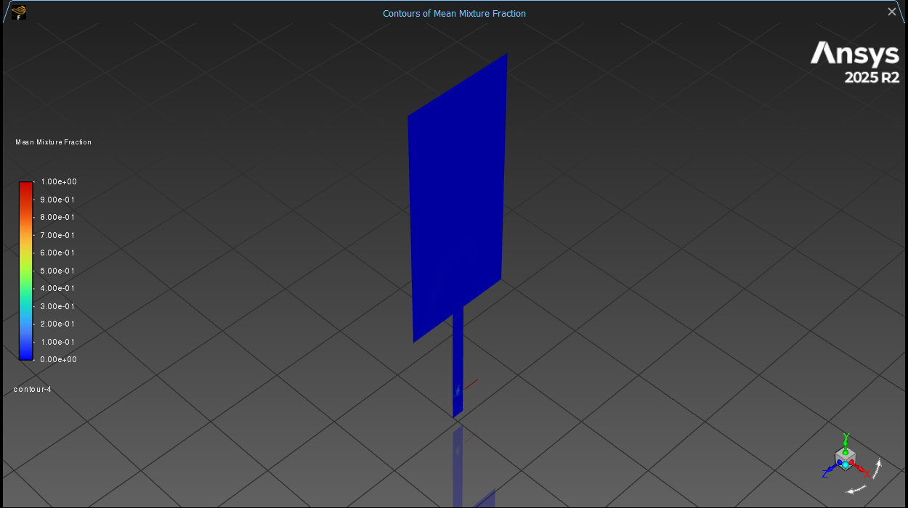
Mean mixture fraction showing fuel–air distribution through the injector plane.
Across the eight cases, I compared temperature, pressure, velocity,
and species behavior. I also reviewed three combustor cases with ANSYS engineers,
which led to four model and setup corrections. Together, those changes improved model
fidelity by 18% and created a more dependable baseline for later analysis.
Takeaway: The final result came from a traceable case development
process that carried the chemistry, flow history, and model setup from the industry
baseline through FGM, LES, and the final reacting solution.
I analyzed light curves from the Transiting Exoplanet Survey Satellite (TESS) for stars in the Hyades open cluster to
investigate how stellar flare activity varies with stellar properties and
observation cadence. Building on an existing flare detection framework, I
characterized flare strengths and constructed cumulative flare frequency
distributions across Gaia BP-RP color ranges and TESS cadences.
The Hyades open cluster provided an older stellar population for extending
the existing young star flare analysis.
Extending flare analysis to an older stellar population
Previous work in the research group focused on Nearby Young Moving Groups
spanning much younger stellar ages. I extended that analysis framework to
the Hyades, an open cluster at approximately 625 million years, to examine
magnetic activity at a later stage of stellar evolution.
Because the stars in the Hyades are approximately the same age, the cluster
also provides a useful way to compare flare behavior across stellar mass and
type without introducing a large age difference between the stars.
Turning TESS light curves into comparable flare measurements
I worked with light curves from the TESS Quick-Look Pipeline and used a
Python-based detection and fitting workflow to identify flare candidates.
Candidate events were selected from detrended light curves and fit to recover
their amplitudes and durations, with recovered flares required to rise more
than 3σ above the quiescent flux level.
I then calculated fractional flare energy by integrating the flare signal
over time and normalizing it by the star's quiescent brightness. Using a
dimensionless energy ratio made it possible to compare flare strengths across
stars with different baseline brightness levels.
Building the flare frequency distribution for the cluster
I combined the recovered events into a cumulative flare frequency
distribution (FFD). The horizontal axis represents fractional flare energy,
while the vertical axis shows the fraction of flares stronger than a given
energy, allowing the overall activity distribution of the cluster to be
viewed in a single curve.
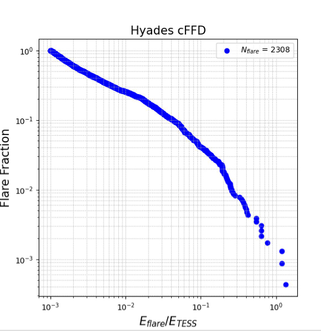
Cumulative flare frequency distribution for the full Hyades sample.
2308flares represented in the cumulative Hyades FFD
Testing how observation cadence changes the result
TESS does not observe every target at the same time resolution, so I compared
the flare distributions from the 10-minute and 200-second cadence samples
separately. The higher cadence dataset contained substantially more detected
events and better captured short-duration flares.
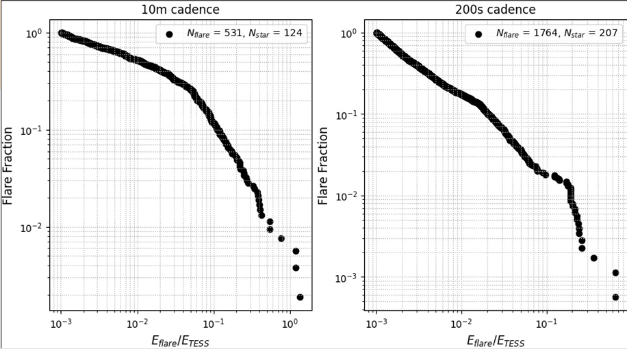
Whole cluster flare frequency distributions separated by TESS observation cadence.
531flares in the 10-minute cadence FFD
1764flares in the 200-second cadence FFD
This comparison showed that observation cadence is not just a plotting choice; it
changes which flare population can be recovered from the data and therefore
affects the activity trends inferred from the light curves.
Comparing activity across stellar types
Gaia BP-RP color provides a proxy for stellar temperature and spectral type.
I separated each cadence sample into broad BP-RP ranges and compared their FFDs
to look for differences in flare behavior across hotter and cooler stars.
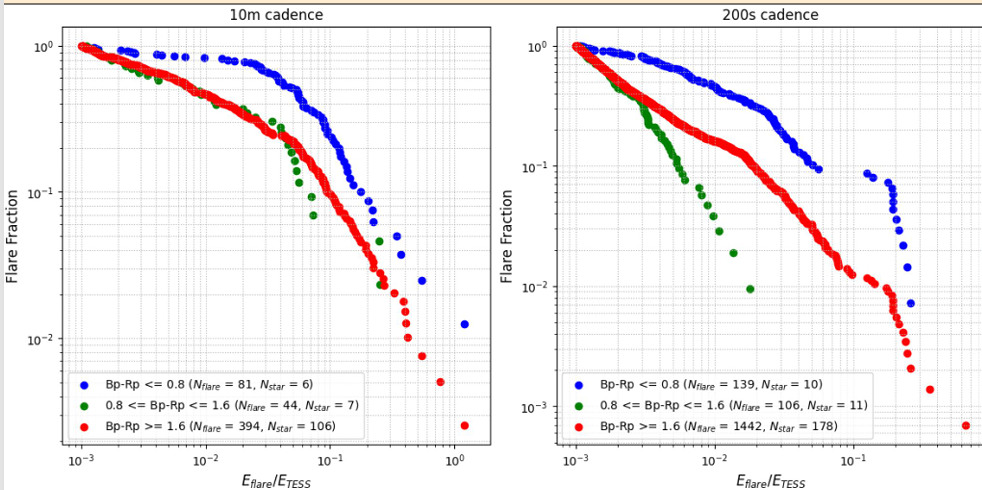
Flare frequency distributions separated by observation cadence and Gaia BP-RP color range.
The preliminary distributions suggested that cooler, lower mass stars at
higher BP-RP values remained more flare active than the bluer stellar
populations. I treated this as a trend to investigate rather than a final
conclusion because the cadence groups and stellar-color bins contain different
sample sizes.
Looking beyond flare frequency
I also compared equivalent flare duration with fractional flare energy for
the two cadence groups. Plotting the individual events alongside their
distributions provided another view of how temporal resolution changes the
flare population recovered from the observations.
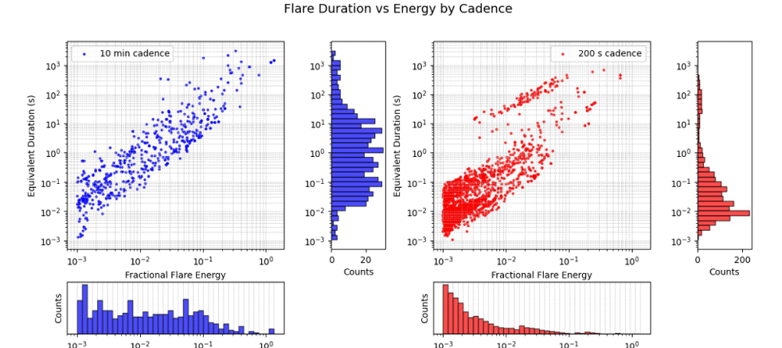
Equivalent flare duration versus fractional flare energy for the
10-minute and 200-second cadence samples.
What the analysis showed
The Hyades analysis showed how both stellar characteristics and observational
choices affect the activity patterns extracted from astronomical time series
data. Shorter cadence observations recovered a larger population of short
flares, while the BP-RP comparisons revealed preliminary differences in
activity across stellar types.
Extending the analysis to the older Hyades population also created a bridge
between the younger stellar groups studied by the existing pipeline and later
stages of magnetic evolution.
Takeaway: This project gave me experience turning astronomical
time series data into interpretable physical trends. I worked across light curve
processing, Python-based flare fitting, energy normalization, and population-level
visualization while learning how observational factors such as cadence can affect
the conclusions drawn from a dataset.
UNDERGRADUATE RESEARCH · MODEL BASED SYSTEMS ENGINEERING×
Urban Drone Delivery System MBSE
I developed a complete SysML model of an autonomous package delivery drone,
connecting its urban operating context to requirements, system architecture,
mission behavior, performance equations, and scenario level feasibility checks.
The result was an integrated model that could explain both how the system was
organized and whether a proposed mission should proceed.
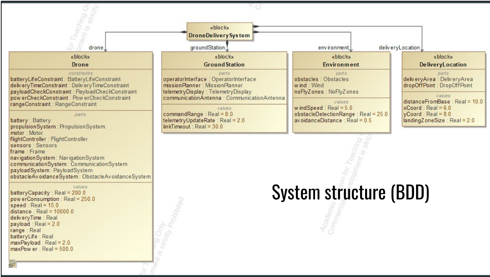
The system architecture decomposes the mission into the drone, ground station,
operating environment, and delivery location, then traces the drone into its
propulsion, energy, navigation, communication, sensing, and payload subsystems.
RANGE TARGET≥ 10 km
BATTERY TARGET≥ 40 min
PAYLOAD LIMIT≤ 2 kg
TRADE CASES3 scenarios
01 · SYSTEM BOUNDARY + REQUIREMENTS
Defining the mission before defining the vehicle
I began by setting the system boundary around an urban delivery mission. The drone
receives a request from the customer, accepts commands from a ground station,
operates within wind, obstacle, and no-fly-zone constraints, and delivers a package
to a specified location. Establishing those external interactions prevented the model
from treating the aircraft as an isolated product.
The top level requirement, to deliver packages autonomously and safely, was decomposed
into performance, energy, safety, and payload branches. This created traceable targets
for delivery time, range, speed, battery life, power consumption, obstacle avoidance,
emergency landing, and payload capacity.
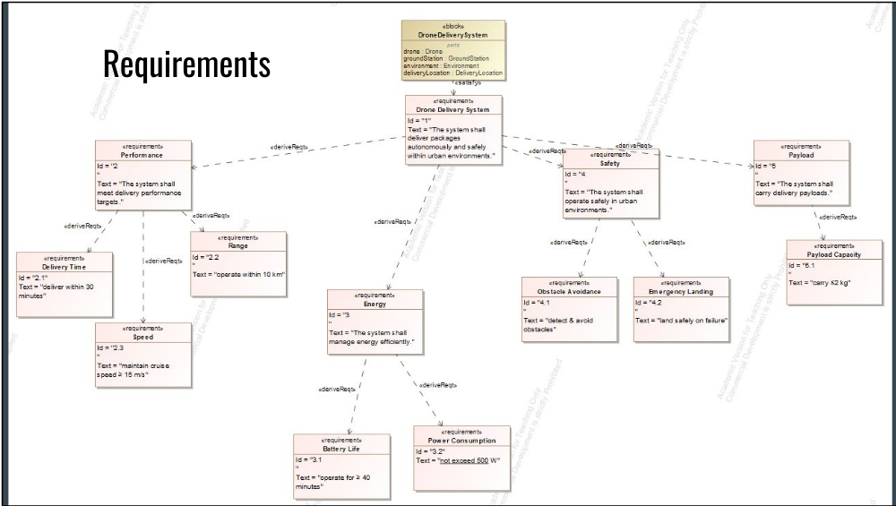
Derived requirements connect the mission objective to measurable performance,
energy, safety, and payload criteria.
02 · LOGICAL ARCHITECTURE
Decomposing the system into accountable subsystems
I used a block definition diagram to organize the system hierarchically. The drone
contains the battery, propulsion system, motor, flight controller, sensors, frame,
navigation, communications, payload handling, and obstacle avoidance functions. The
ground station was separately decomposed into mission planning, telemetry, operator
interface, and communication elements.
Keeping the vehicle, ground segment, environment, and destination distinct made
ownership of each value and constraint clearer. It also created a consistent structure
for connecting later behavior and parametric analysis back to the responsible blocks.
03 · NOMINAL + OFF-NOMINAL BEHAVIOR
Modeling how the mission proceeds and when it stops
The activity model describes the full delivery workflow: receive the request, validate
payload and energy, plan the route, take off, navigate, respond to obstacles, confirm a
safe landing area, deliver the package, and return to base. Decision nodes turn safety
requirements into go/no-go logic.
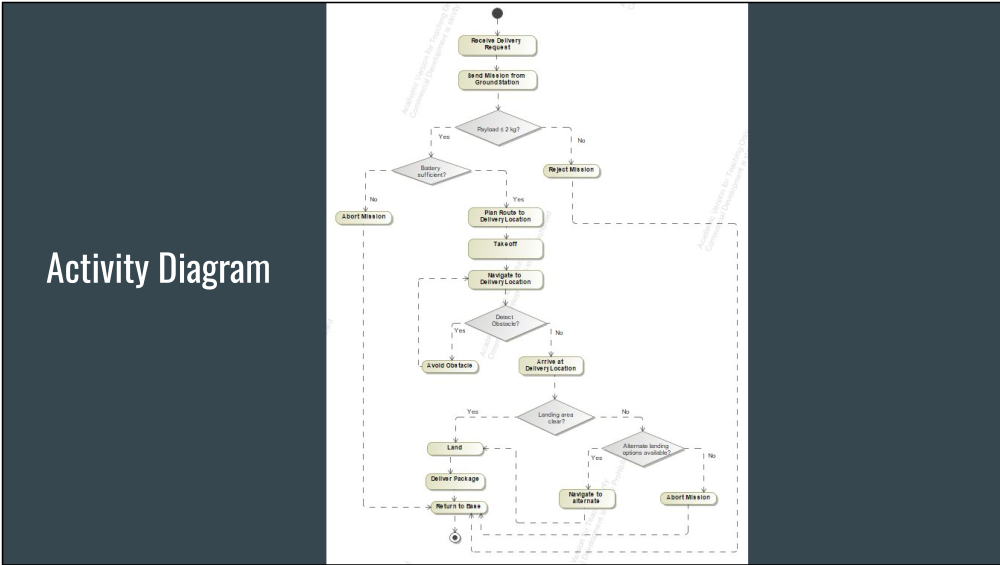
Activity flow with payload, battery, obstacle, and landing area checkpoints.
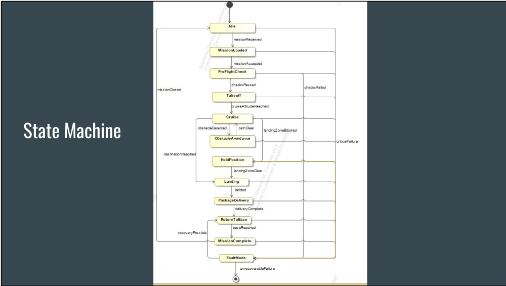
State machine covering mission modes from idle through delivery and return,
with a fault path available throughout operation.
I complemented the process view with a state machine for discrete operating modes.
Cruise can transition into obstacle avoidance or hold position, while unsafe conditions
route the vehicle toward fault handling. Together, the two diagrams capture both the
sequence of mission activities and the vehicle state at each point.
04 · EXECUTABLE PARAMETRICS
Connecting architecture to quantitative performance
I embedded constraint blocks for battery life, delivery time, range, power, and payload.
Battery capacity and power consumption determine endurance, distance and speed determine
delivery time, and speed and endurance determine range. Binding these relationships to
block values turned the model from a static description into an analysis framework.
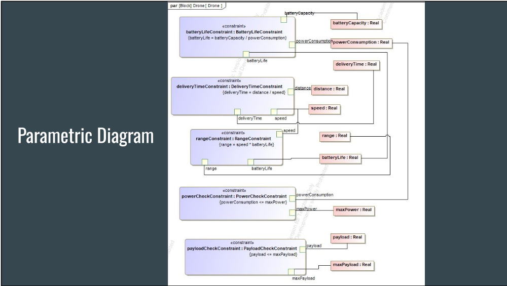
Constraint blocks link physical inputs to mission outputs and enforce maximum
power and payload limits within the same system model.
05 · TRADE STUDY + FEASIBILITY
Using scenarios to reveal mission level consequences
I evaluated baseline, heavy payload, and long distance scenarios while holding battery
capacity, power consumption, and speed constant. The baseline case produced an 11.1 minute
delivery time, 48 minutes of battery life, and 43 km of modeled range. Doubling the route
distance increased delivery time to 22.2 minutes while endurance and range remained fixed,
as expected from the governing inputs.
BASELINE DELIVERY11.1 min
LONG-DISTANCE CASE22.2 min
MODELED ENDURANCE48 min
HEAVY PAYLOADMission rejected
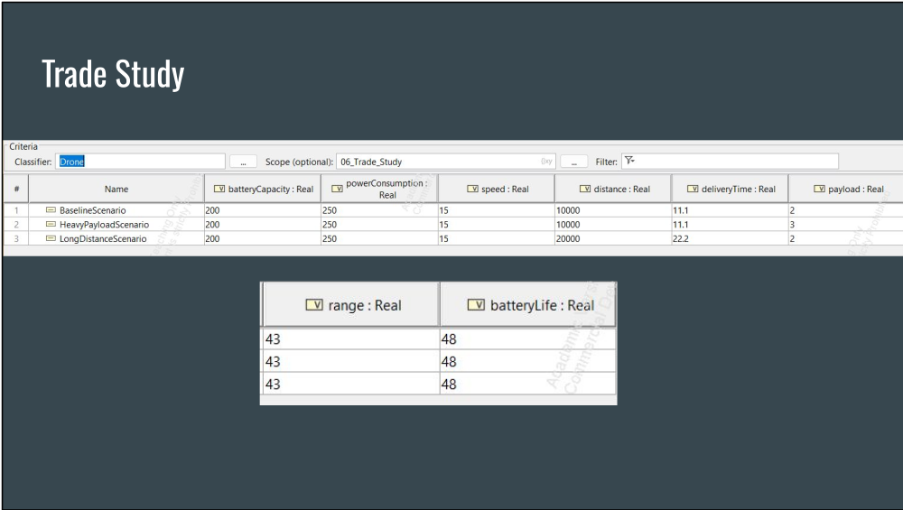
Instance level trade study comparing distance, payload, delivery time, range,
and battery life across three mission cases.
Takeaway: The project showed how MBSE can preserve a continuous thread
from stakeholder context and requirements to architecture, behavior, equations, and
mission decisions. The 3 kg payload case was rejected against the 2 kg limit, making
requirement compliance an active part of the model.
I helped develop and review complex CAD benchmarks used to assess AI-generated
engineering work. The role brought together mechanical design, requirements
interpretation, rubric development, and CAD validation. I checked each submission
for geometric accuracy, completeness, and consistency with the
original design brief.
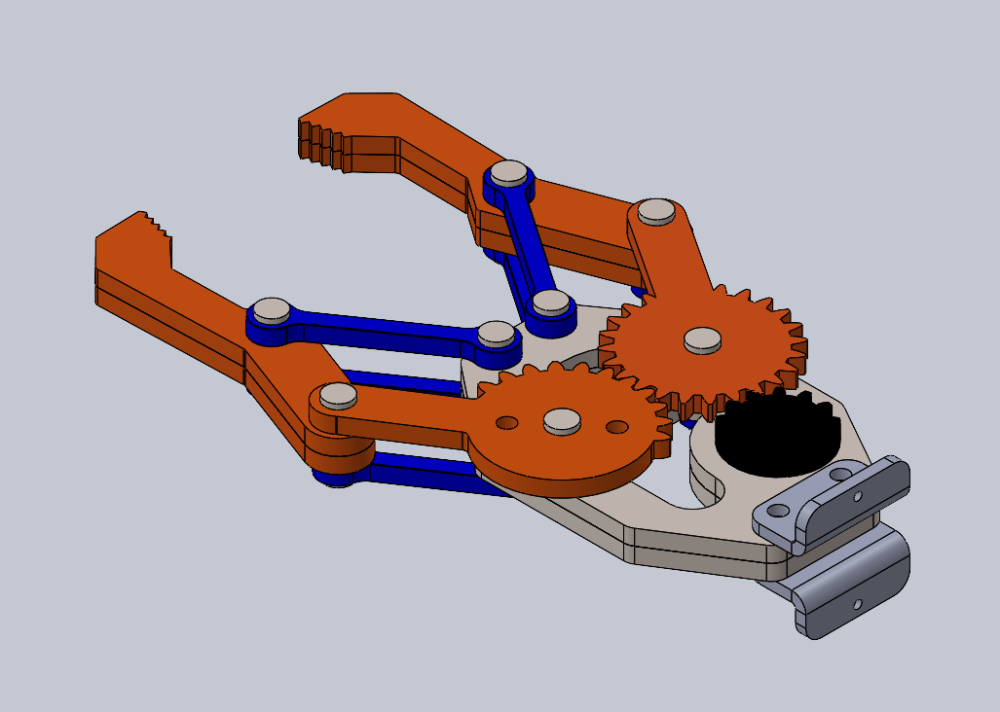
A representative mechanical gripper used to assess whether a CAD assembly captured
the required geometry and mechanical features.
Turning design requirements into clear CAD tasks
A strong CAD benchmark needs to be detailed enough for different reviewers to reach
the same conclusion. I translated engineering instructions into focused tasks that
clearly defined the expected geometry, features, assembly relationships, and final
deliverables.
The key challenge was making every requirement measurable. A model could not pass
simply because it resembled the reference; the task also needed to confirm that the
correct components, features, and mechanical relationships were present.
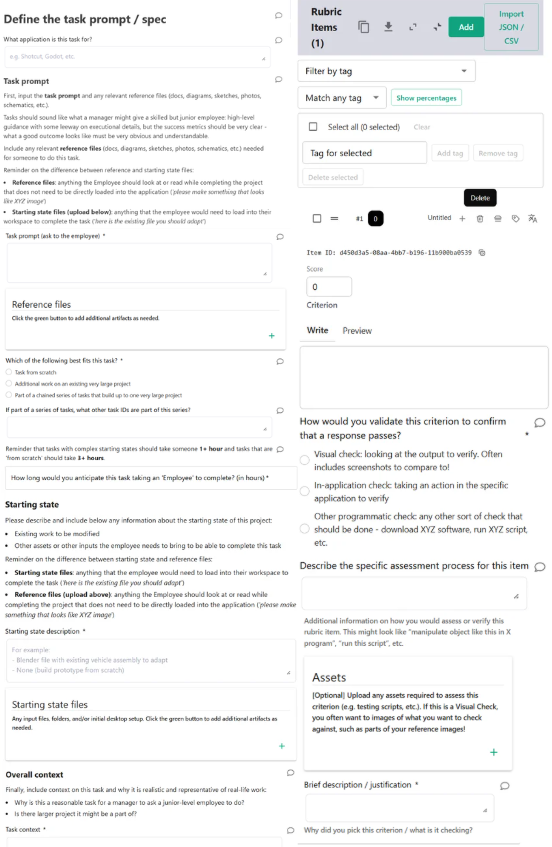
An example task interface pairing a CAD assignment with specific review criteria.
Comparing the design intent with the final model
For each benchmark, I compared the submitted CAD work with both the written brief and
the reference geometry. I began with the overall mechanism, then worked through the
smaller details that determined whether the design was truly accurate.
For the claw gripper shown here, I reviewed the opposing jaws, gear train, linkages,
pivot locations, base geometry, and mounting features, along with how those parts came
together as a complete mechanical assembly.
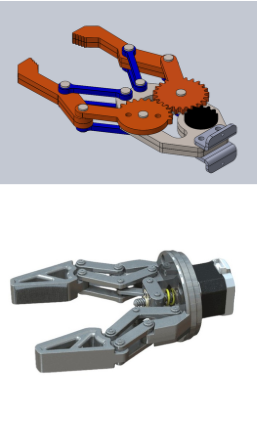
A side-by-side comparison used to check the mechanism's overall geometry and the
relationships between its components.
Building an objective evaluation rubric
Rather than assigning one subjective score to an entire model, I broke each CAD task
into a series of focused checks. The rubric covered elements such as required
components, feature construction, gear alignment, linkage connections, mounting
geometry, and assembly organization.
This approach made reviews more consistent and repeatable. A submission might look
convincing at first glance but still miss an important feature, interface, or
mechanical relationship.
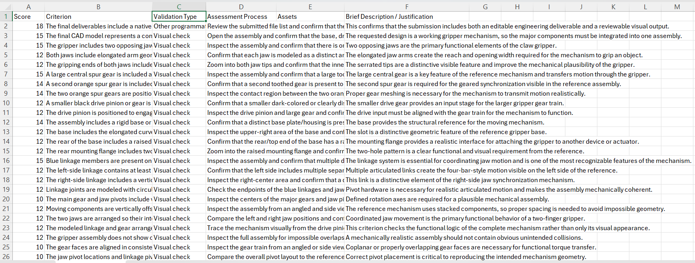
The gripper rubric separates the design into mechanical and geometric details
that can be checked individually.
Looking beyond visual similarity
The final review went beyond screenshots. I opened the CAD model and inspected its
dimensions, feature placement, component relationships, and overall compliance with
the rubric.
Direct inspection was especially important for details that might appear correct in
an isometric view while being wrong in the underlying model, including spacing,
alignment, hole placement, and clearances between moving parts.
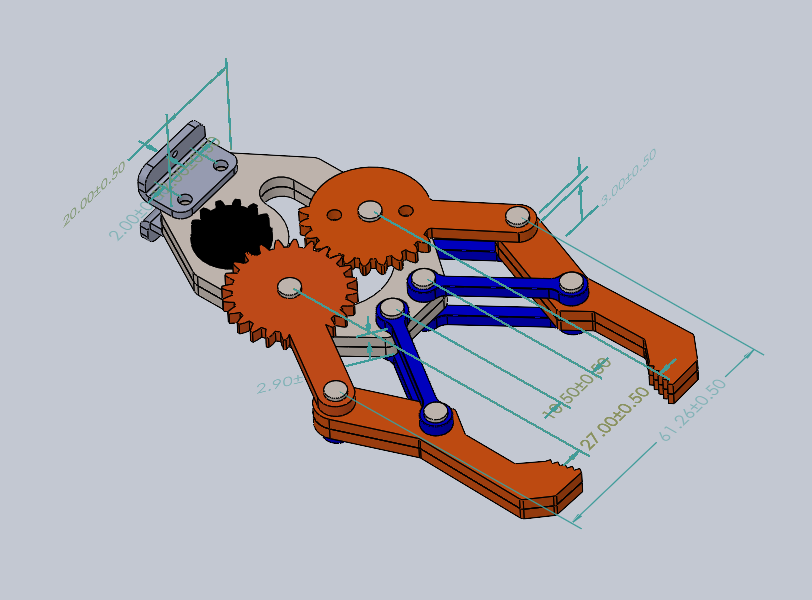
Direct CAD inspection reveals dimensions and mechanical relationships that cannot
be judged reliably from appearance alone.
Approaching CAD as both a designer and a reviewer
This work required me to think about CAD from two perspectives: how an engineer would
build the model and how a reviewer could verify the result. It reinforced that clear
instructions and measurable acceptance criteria are just as important as the final
geometry.
Takeaway: This project strengthened my ability to turn engineering
requirements into clear CAD tasks, build objective rubrics, and verify models for
accuracy and completeness. It also taught me to evaluate the design information behind
a model instead of relying on appearance alone.
I built a MATLAB solver to analyze a two dimensional double wedge airfoil
from subsonic through supersonic conditions. The tool chooses the
appropriate aerodynamic model, calculates pressure and force coefficients,
runs parametric studies, and searches for the most efficient valid design.
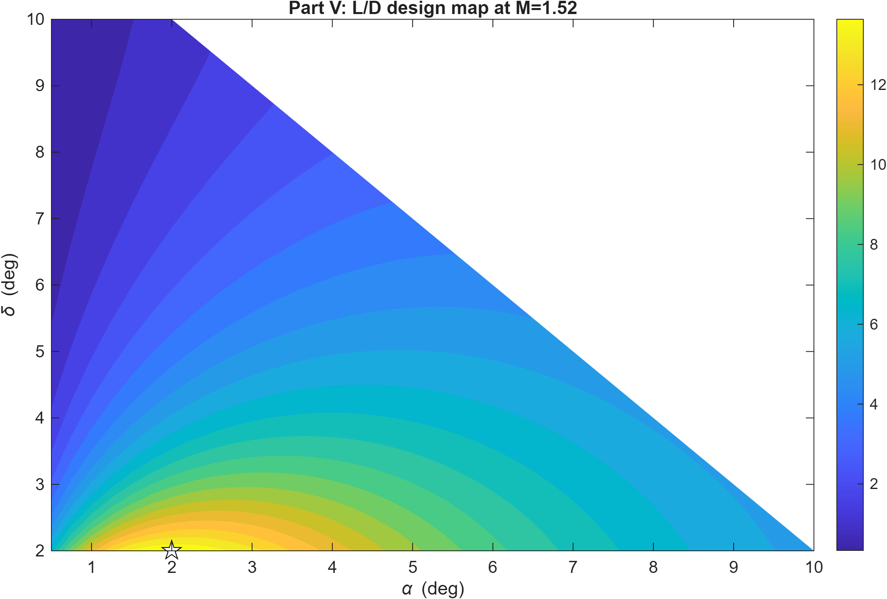
Design space search at Mach 1.52. The star marks the best attached shock
solution within the selected angle of attack and wedge angle bounds.
MACH1.52
ANGLE OF ATTACK2°
WEDGE HALF-ANGLE2°
MAXIMUM L/D14.306
01 · TOOL ARCHITECTURE
Using one workflow across multiple flow regimes
Aerodynamic models are only reliable within specific operating ranges, so I
designed the solver around model validity rather than forcing one equation set
across every Mach number. The user enters freestream Mach number, angle of
attack, and wedge half angle, and the code validates those inputs and routes the case
to the suitable analysis method.
SUBSONIC · M < 0.8
Linearized thin airfoil theory with a Prandtl–Glauert compressibility correction.
TRANSONIC · 0.8–1.2
The solver stops instead of returning results from a model outside its valid range.
SUPERSONIC · M > 1.2
Panel-by-panel shock expansion theory using oblique shocks and Prandtl–Meyer expansions.
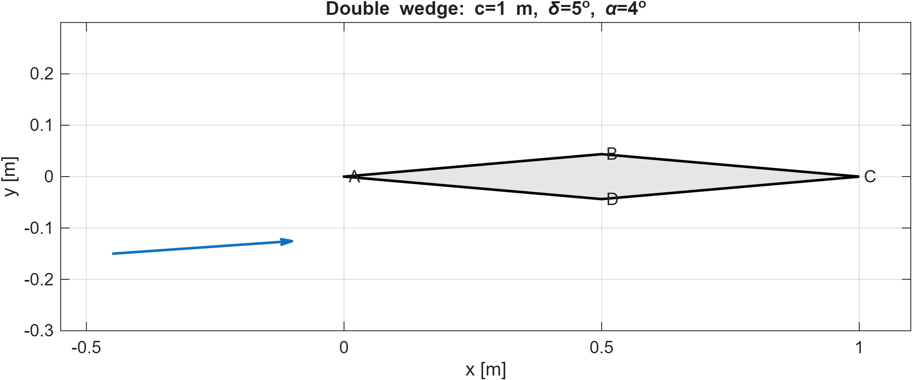
Automatically generated double wedge geometry. The four panels are tracked
separately so downstream Mach number and pressure can be carried from the front
panels to the rear panels.
02 · MODEL COMPARISON
Capturing different aerodynamic behavior below and above Mach 1
In the subsonic model, lift varied linearly with angle of attack and increased as
the Prandtl–Glauert correction grew stronger. At Mach 0.3, the lift coefficient
changed from −0.6897 at −6° to 1.0346 at 9°. The supersonic solution remained
linear with angle of attack, but its lower slope reflected the different
pressure response predicted by shock expansion theory.
Comparing lift response at Mach 0.3 and Mach 2.0 shows why the tool must switch
models as the flow regime changes.
03 · SUPERSONIC PANEL SOLUTION
Marching shocks and expansions across the airfoil
For supersonic cases, I followed the upper and lower surfaces independently from
leading edge to trailing edge. Each turn was classified as a compression or
expansion. Compression corners used the weak attached solution of the
θ–β–M relation, while expansion corners used the Prandtl–Meyer function. The
state leaving each front panel became the starting condition for its rear panel.
At Mach 2, a 2° angle of attack, and a 3° wedge half angle, the lower front panel
produced the strongest compression and reached a pressure coefficient of 0.11265.
The rear panel expansions reduced pressure on both surfaces before the panel forces
were integrated into lift and inviscid wave drag.
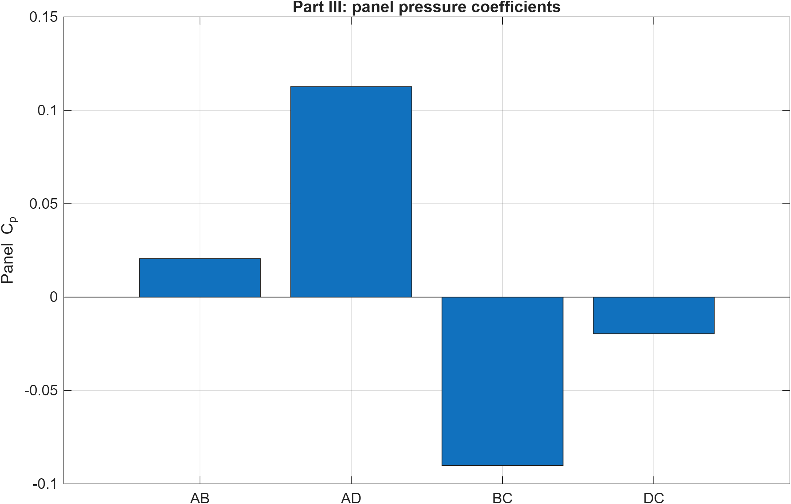
Panel pressure coefficients for the Mach 2 reference case. Positive values mark
compression dominated front panels, and negative values show the rear expansions.
04 · PARAMETRIC STUDY
Finding the design variable that controlled efficiency
I swept Mach number, angle of attack, and wedge half angle to separate their effects.
Wedge angle produced the clearest design tradeoff. At Mach 2 and 2° angle of attack,
increasing the half-angle from 2° to 10° raised lift coefficient only from 0.08082
to 0.08545, while wave-drag coefficient increased from 0.00565 to 0.07604.
The result showed that stronger flow turning added wave drag much faster than lift.
Aerodynamic efficiency therefore fell from an L/D of 14.3 to 1.12 across the sweep,
making thickness the dominant variable in the final design search.
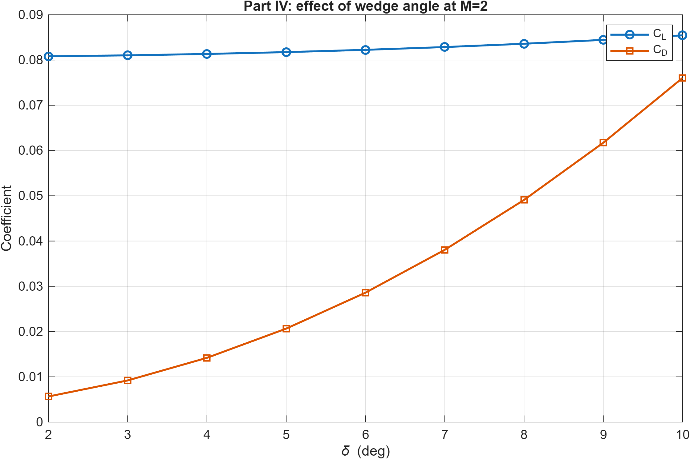
Increasing wedge half angle had little effect on lift but caused wave drag to
rise sharply.
05 · DESIGN SEARCH
Optimizing within the limits of the aerodynamic model
The final search covered Mach 1.3–3.0, angles of attack from 0.5°–10°, and wedge
half angles from 2°–10°. Cases with detached shocks were rejected automatically,
and a finer search was run around the best initial result. The optimum occurred at
Mach 1.52, α = 2°, and δ = 2°, producing CL = 0.122831,
CD = 0.008586, and L/D = 14.306.
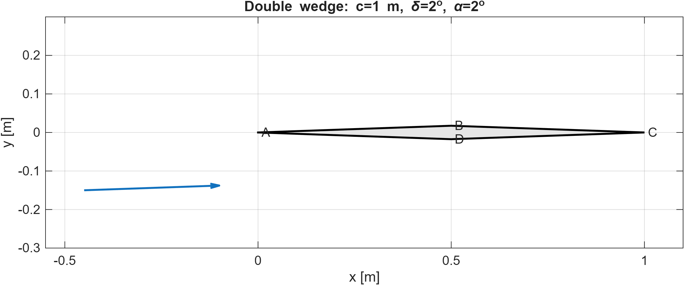
Optimized doublew edge geometry. At α = δ, the upper front panel aligns with
the freestream, while the lower front panel generates the primary compression.
Takeaway: This project strengthened my ability to turn aerodynamic
theory into a reusable computational tool, recognize where each model is valid, and
connect parametric results to a defensible engineering design decision.
I developed a preliminary design analysis
for a two dimensional, closed circuit supersonic wind tunnel. I used MATLAB
to compare air, argon, and carbon dioxide across Mach 1.5–4.5 and stagnation
temperatures from 300–700 K. The goal was to determine how those choices
would affect the tunnel's physical dimensions, startup power, operating
temperature, and the pressure and thermal conditions around a test model.
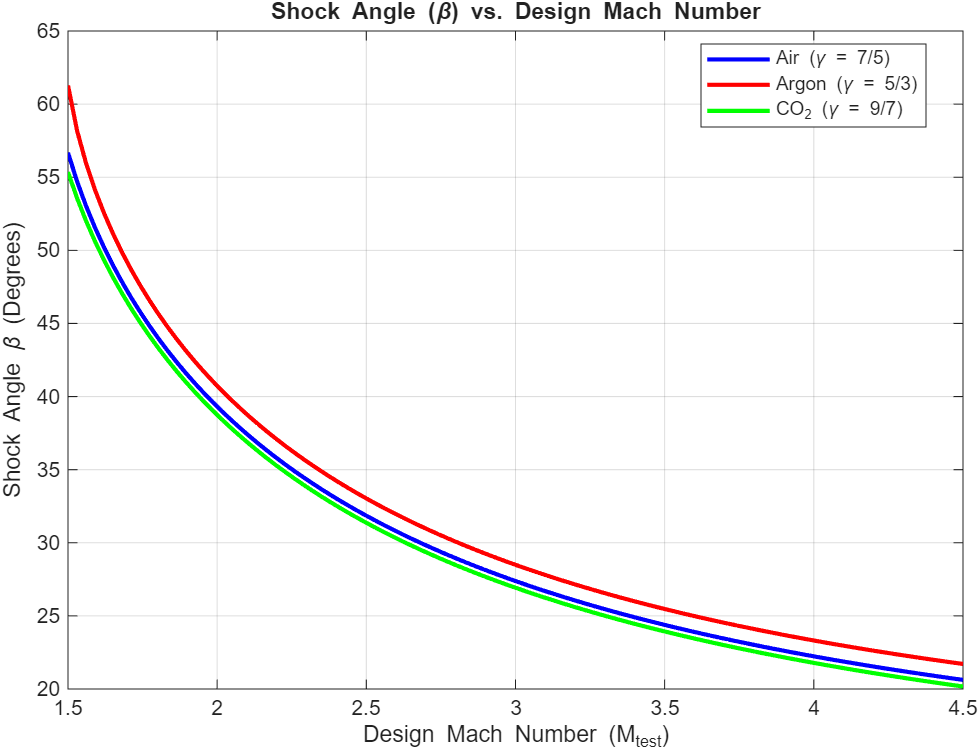
Predicted oblique shock angle for a symmetric 20° wedge. Gas selection changes
how close the shock sits to the tunnel walls across the operating range.
MACH RANGE1.5–4.5
STAGNATION TEMPERATURE300–700 K
WORKING FLUIDS3
MODEL APEX ANGLE20°
01 · DESIGN QUESTION
Connecting tunnel operation to the test environment
The design brief called for a closed circuit tunnel that could produce
supersonic test conditions over a wide operating range. I needed to evaluate
three possible gases (air, argon, and carbon dioxide) at test-section Mach
numbers from 1.5 to 4.5 and inlet stagnation temperatures from 300 to 700 K.
Each choice changed the tunnel geometry,
the energy required to start it, and the environment surrounding a test model.
I therefore split the work into two linked problems. First, I sized the
converging-diverging nozzle and diffuser throats, estimated maximum compressor
power during startup, and calculated the static temperature entering the test
section. Then I placed a symmetric 20° wedge in the modeled flow and predicted
its oblique shock angle, surface pressure ratio, and downstream temperature.
Together, these calculations showed both what the tunnel would require to
operate and what an experiment inside it would experience.
TUNNEL OPERATION
Isentropic area relations, normal shock losses, throat sizing, compressor power, and static temperature.
MODEL FLOWFIELD
Numerical θ–β–M solution, surface pressure ratio, and downstream shock temperature.
02 · NOZZLE AND DIFFUSER SIZING
Translating Mach number into tunnel geometry
For steady operation, the converging-diverging nozzle accelerates the gas to
the target test section Mach number. Because the tunnel was modeled with a
constant span, the compressible area relation could be written directly as a
height ratio. As Mach number increased, the required nozzle throat became much
smaller relative to the test section.
I also sized the diffuser throat around the minimum loss starting condition,
with the normal shock positioned at the second throat. This requirement moved
in the opposite direction, as the second to first throat ratio rose rapidly with
Mach number. Argon produced the smallest geometry change at the high end of the
design space, while carbon dioxide required the largest.
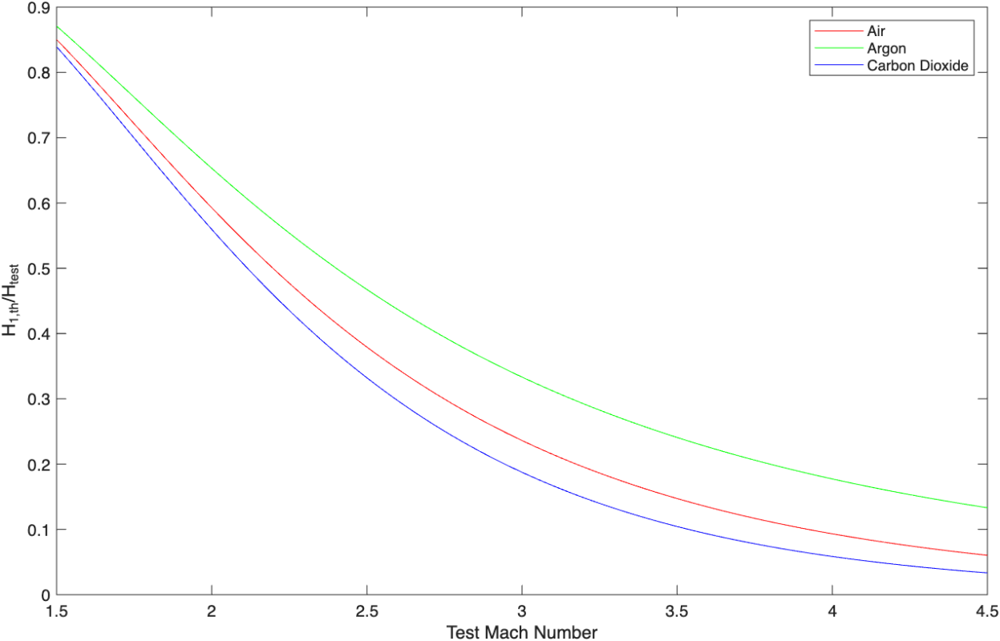
The nozzle throat must shrink relative to the test section as the target
Mach number increases.
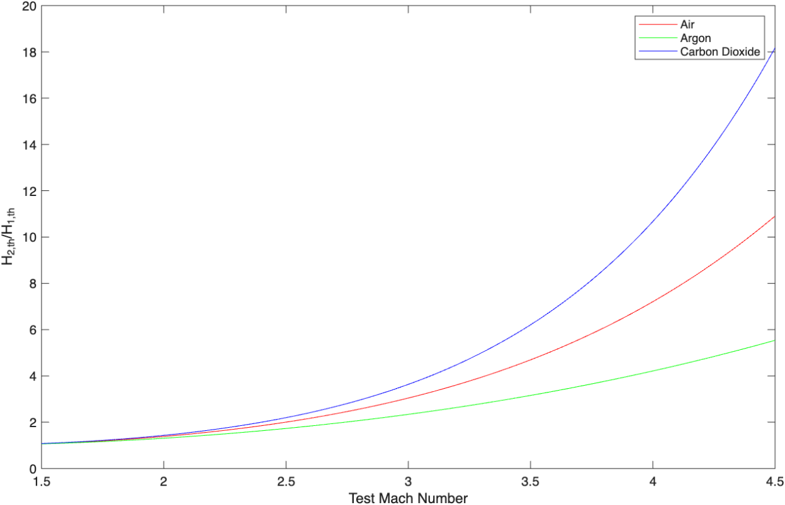
The required diffuser-to-nozzle throat ratio grows rapidly, particularly
for carbon dioxide at high Mach number.
03 · OPERATING COST AND THERMAL LIMITS
Estimating what it takes to start and run the tunnel
I used conservation of energy, compressible mass flow, and stagnation property
relations to estimate normalized maximum compressor power. The power demand stayed
relatively modest through much of the range, then climbed sharply above roughly
Mach 3.5. Higher stagnation temperature increased that demand, and carbon dioxide
was the most power intensive of the three fluids. Argon required substantially less.
The easier startup came with a thermal tradeoff. Isentropic expansion through the
nozzle reduced the test section static temperature as Mach number increased. Argon
produced the lowest temperatures, while carbon dioxide remained warmer. This meant
the working fluid could not be selected from geometry or power alone, material limits
and the desired test environment also mattered.
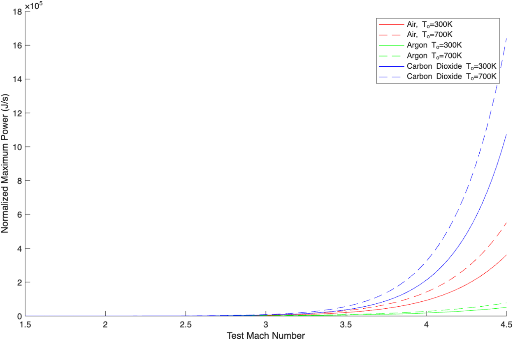
Startup power rises sharply at high Mach number and is strongly affected by
both working fluid and stagnation temperature.
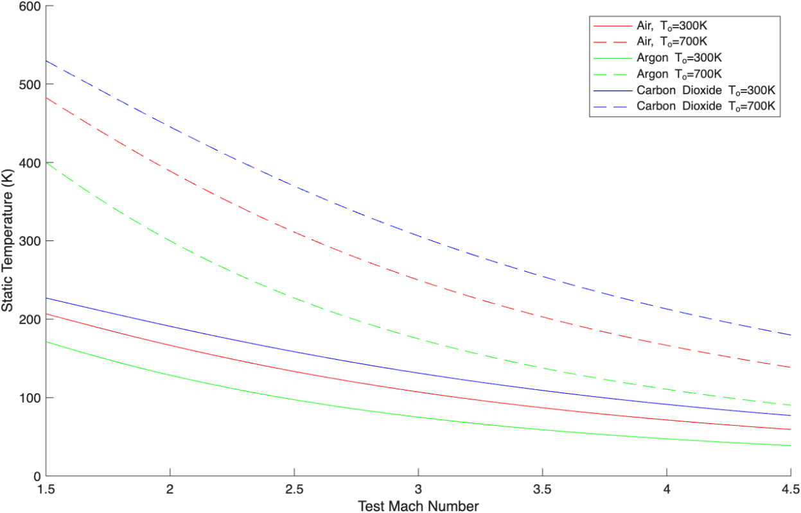
Test section static temperature falls with Mach number, and argon reaches the
coldest operating conditions.
04 · WEDGE FLOWFIELD
Predicting the loads and temperatures around a test model
To connect the facility design with an actual experiment, I analyzed a symmetric
wedge with a 20° apex angle. The MATLAB tool solved the θ–β–M equation numerically
for the weak oblique shock, then used the normal Mach component to calculate the
pressure rise and temperature change across the shock.
The shock swept closer to the model as Mach number increased. Argon consistently
produced the steepest shock and the largest surface pressure ratio, which would make
it useful for higher load testing but would also increase the risk of shock reflections
from the test section walls.
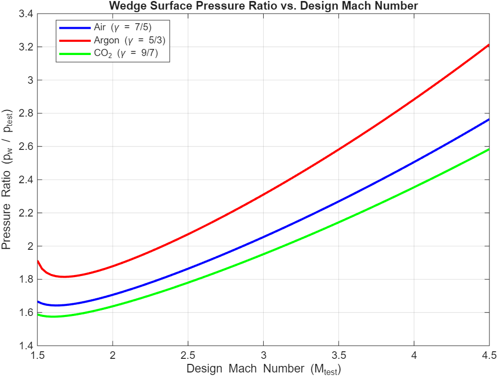
Argon produces the highest wedge surface pressure ratio throughout most of the
design space, while carbon dioxide produces the lowest.
05 · DESIGN TRADEOFF
Choosing a gas based on the mission of the facility
Downstream temperature revealed the clearest limitation of argon. Although every gas
heated as it crossed the oblique shock, the upstream isentropic expansion dominated the
overall trend. At a 300 K stagnation temperature, argon fell to about 65 K near Mach 4.5,
compared with warmer conditions for air and carbon dioxide.
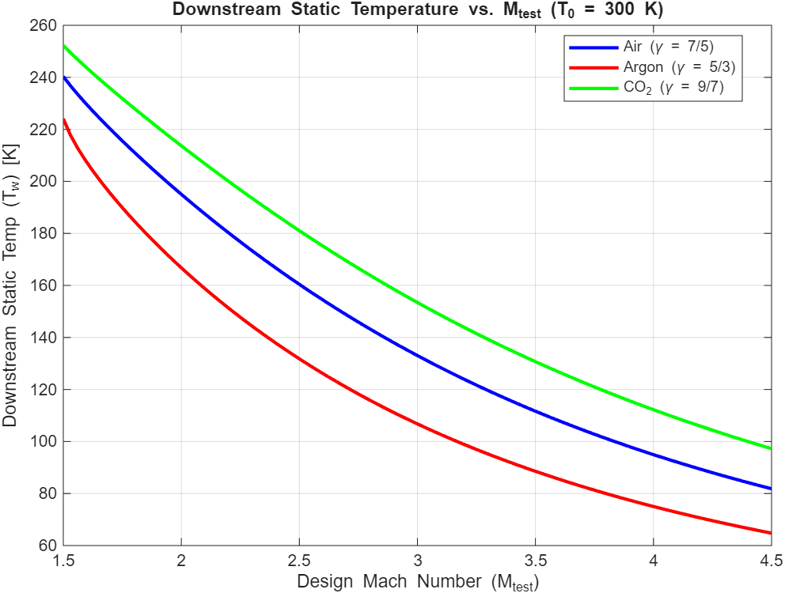
Predicted downstream model temperature at a 300 K stagnation condition. The very
low argon temperatures could require specialized materials or a hotter inlet condition.
Takeaway: There was no single best working fluid. Argon reduced startup
power and eased geometric sizing, but it created the coldest and most severe model
environment. Air and carbon dioxide required more demanding tunnel operation but offered
warmer test conditions. The final choice depends on whether facility efficiency or a
particular aerodynamic test environment is the stronger priority.
I completed a steady state, one way FSI analysis in ANSYS, following the
load path from the surrounding airflow to the pressure on the blade and
finally to the blade's structural response.
TOOLS
ANSYS Fluent · ANSYS Mechanical · ANSYS CFD-Post
STRUCTURE
Orthotropic composite shell + internal spar
Pressure distribution from the converged Fluent solution. This
aerodynamic surface load becomes the input to the structural model.
The problem: connect the airflow to the structure
The project follows a roughly 43 meter utility scale wind turbine
blade through a complete CFD and FEA workflow. The blade transitions
from a cylindrical root into S818, S825, and S826 airfoil sections,
with spanwise twist and a 4° pitch angle at the tip.
Instead of treating aerodynamics and structures as unrelated
analyses, the goal was to calculate the pressure field in Fluent
and transfer that same loading into Mechanical. Because the
structural deformation is not sent back to the CFD model, this is
a steady state, one way fluid structure interaction
analysis.
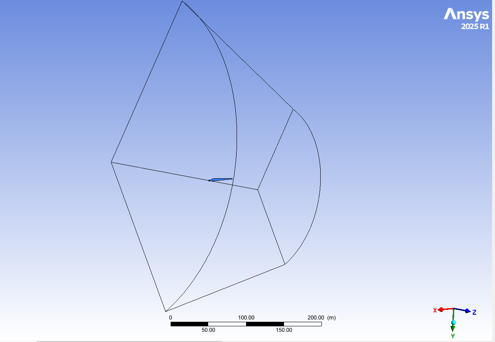
Blade and fluid-domain geometry used for the aerodynamic model.
Only one third of the rotor domain is required because the three
blades are related by periodicity.
Modeling a rotating blade without a moving mesh
The incoming wind speed is 12 m/s and the blade rotates at
2.22 rad/s, giving a tip-speed ratio of approximately 8. I modeled
the flow in a rotating reference frame, which captures the blade
rotation while allowing the computational mesh itself to remain
stationary.
The CFD model uses the Reynolds-averaged continuity and
Navier-Stokes equations with the SST k-ω turbulence model. The
inlet is prescribed at 12 m/s, the outlet at atmospheric pressure,
the blade is a no slip wall, and the two side faces are periodic.
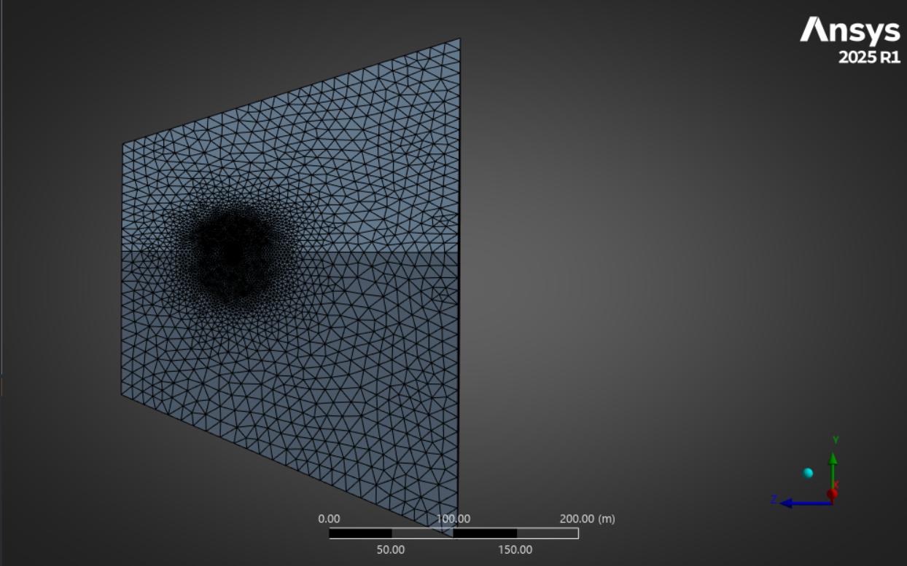
CFD mesh surrounding the blade. The baseline model contains several hundred thousand cells and uses local
refinement around the blade and wake region.
Solving the aerodynamic side
I solved the flow with Fluent's pressure based solver and monitored
convergence before extracting the quantities needed for the next
stage. The CFD solution shows how pressure changes over the blade
surface and how the rotating blade redirects the surrounding flow.
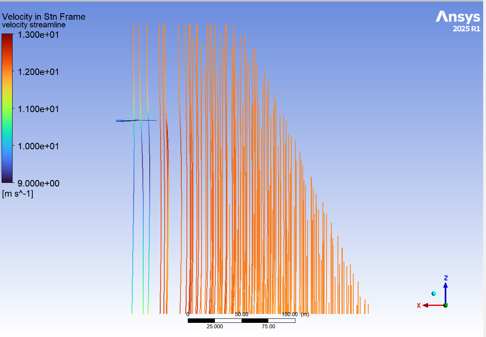
Velocity streamlines from CFD-Post, showing the three dimensional
flow response around the rotating blade.
CFD VERIFICATION
The simulated blade-tip velocity was 98.05 m/s compared with
98.12 m/s from the hand calculation. I also checked mass balance,
pressure convergence, iteration convergence, and the effect of
mesh refinement before using the aerodynamic loads downstream.
Passing the aerodynamic load into FEA
The key step in the project is the Workbench connection between
the Fluent and Mechanical systems. The pressure field calculated
on the wetted blade surfaces is imported directly as a structural
pressure load, preserving the spatial variation found in the CFD
solution.
ANSYS Workbench coupling workflow. The CFD solution supplies
the pressure loading used by the downstream structural model.
Building the structural model
The blade is represented as an orthotropic composite structure
with an outer shell and an internal spar. Both components vary in
thickness along the span, reflecting the much heavier root region
and thinner tip. In Mechanical, I assigned the composite material,
thickness distribution, rotational velocity, root constraint, and
imported aerodynamic pressure field before solving for the
structural response.
I then evaluated total deformation and von-Mises equivalent stress
to see where the aerodynamic and rotational loads produce the
largest structural response.
Total structural deformation under the combined rotational
and imported aerodynamic loading.
Structural stress result used to identify the most highly
loaded regions of the blade.
Verification mattered as much as the contour plots
On the structural side, the ANSYS root radial force was 1578.1 kN compared with a 1576.3 kN hand calculation, a difference of about 0.1%. The CFD mesh-refinement study also showed that the baseline mesh was not fully mesh independent for power prediction, emphasizing the importance of verifying numerical convergence rather than relying only on visually smooth contour results.
98.05 m/sCFD blade-tip velocity
98.12 m/shand-calculated tip velocity
0.1%root radial-force difference
Takeaway: this project gave me an end-to-end view
of multiphysics simulation - defining the aerodynamic model,
checking the CFD solution, transferring distributed loads, and
evaluating the resulting structural response in a single connected
ANSYS workflow.
Mars Opportunity Rover
Mobility Subsystem Modeling &
Feasibility Analysis
I translated the physical behavior of the Mars Opportunity Rover's
mobility subsystem into an executable SysML model, connecting rover
architecture, engineering constraints, parametric simulation, and
system-level feasibility analysis.
TOOLS
MagicDraw / Cameo · ParaMagic · ModelCenter
Mars Opportunity Rover, the reference system used for the research model.
Modeling the rover as an integrated system
The research began by representing the Opportunity Rover as a connected
system rather than a collection of independent components. The team model
organized the rover into six major subsystems: mobility, power, structure,
instrumentation, guidance/navigation/control, and thermal control.
Each subsystem contained its own parameters and relationships,
while the full SysML architecture established how those subsystem-level
quantities contributed to the behavior of the complete rover.
Full Block Definition Diagram showing the major rover subsystems and
their relationships within the system architecture.
My responsibility: the Mobility subsystem
I was responsible for the rover's mobility subsystem. I developed the
mobility block in MagicDraw, assigned engineering value properties and
units, and modeled the relationships needed to determine whether the rover
could move across Martian terrain while satisfying torque, traction, speed,
power, and climbing constraints.
Mobility subsystem constraint architecture connecting the rover model
to torque, traction, speed, power, and climb-limit relationships.
TORQUET = F r
Relates wheel traction force to required motor torque.
TRACTIONFmax = μmg cos(θ)
Estimates the maximum wheel-soil traction available on a slope.
SPEEDv = ωr
Converts wheel angular velocity into rover translational speed.
POWERP = ηT(v/r)
Connects torque and speed to the mobility power requirement.
CLIMB LIMITθmax = atan(μ)
Estimates the steepest terrain supported by the available friction.
Turning the equations into an executable parametric model
Defining the constraint equations was only part of the model. I also had
to bind the correct Mobility value properties to the inputs and outputs of
each constraint so information could propagate through the subsystem.
Shared variables such as wheel radius, coefficient of friction, angular
velocity, traction force, and motor torque were connected across multiple
relationships. The resulting parametric diagram turned the subsystem into
a connected model instead of a set of isolated equations.
Mobility parametric diagram showing how variables are bound
across the torque, traction, power, speed, and climb constraints.
Executing the model with ParaMagic
After completing the parameter bindings, I executed the subsystem using
ParaMagic. Assigned input values propagated through the constraint network,
allowing the model to calculate mobility performance directly from the
connected SysML relationships.
Solved Mobility instance generated through ParaMagic.
REPRESENTATIVE OUTPUTS
Rover Speed0.50 m/s
Motor Torque12 N·m
Power Output21.6 W
Traction Limit387.2 N
Maximum Climb≈ 31°
Connecting Mobility back to the full rover
The Mobility model was ultimately one part of a larger executable rover
architecture. Its parameters and requirements had to remain compatible with
the other subsystem models so that the complete system could be evaluated
together rather than separately.
The full parametric architecture connected subsystem-level relationships to
higher-level rover quantities, creating a framework for evaluating how a
design change in one area could influence the rest of the system.
Full rover parametric architecture connecting subsystem-level parameters
and constraint relationships within the integrated model.
Using the model for feasibility studies
Once the subsystem models were executable, the architecture could be used
for repeated analyses instead of a single solved case. Across the research
effort, more than 30 simulation cases were evaluated over parameters such as
climb angle, traction force, wheel-soil limits, and power consumption.
6major rover subsystems represented
5Mobility constraint relationships developed
30+simulation cases evaluated
TAKEAWAY
This project showed me how MBSE can extend beyond documentation.
Once the relationships are executable, changes to rover
mass, terrain conditions, wheel properties, or power assumptions can
propagate through the model and reveal system-level feasibility limits
and design tradeoffs before physical testing.
The project gave me experience connecting
equations, SysML architecture, parametric simulation, and
system level reasoning in one executable model based workflow.
I used CFD to evaluate and refine the front and rear carbon-fiber
wing assemblies for Georgia Tech HyTech Racing.
6+ride height / AoA configurations
36%faster analysis turnaround
Project Overview
I evaluated the front and rear wing assemblies in ANSYS Fluent
across multiple ride heights and angles of attack to understand
how sensitive their performance was to vehicle setup.
Analysis Workflow
01Wing Geometry
02CFD Domain & Mesh
03Ride Height / AoA Sweep
04Fluent Simulation
05Python Postprocessing
06Design Trade Study
Aerodynamic Evaluation
I compared downforce, drag, and pressure distribution across the
cases, then used those trends to evaluate how changes in vehicle
attitude affected the aerodynamic package.
Postprocessing
I developed Python based postprocessing tools to automate
result extraction and comparison, reducing analysis
turnaround time by 36%.
I used ANSYS Fluent to investigate how rotor performance changes
between Earth and the low-density Martian atmosphere.
100+CFD simulations
18%higher lift-to-power ratio
Project Overview
I compared rotor behavior under Earth and Mars conditions to
understand how lower atmospheric density changes the thrust and
power required for flight.
Simulation Process
01Rotor Geometry
02CFD Mesh
03Earth Conditions
04Mars Conditions
05Performance Extraction
06Geometry Comparison
CFD Campaign
I ran more than 100 ANSYS Fluent simulations and compared
thrust, torque, power demand, and aerodynamic efficiency across
the candidate rotor configurations.
Results
The trade study identified a rotor geometry with an
18% higher lift-to-power ratio than the baseline.
For a team-built model rocket, I designed and revised the 3D-printed bay
that carried a PerfectFlite Pnut altimeter. I also helped manufacture the
vehicle and used the flight test to compare the finished rocket with our
preflight performance model.
MISSION
Carry an altimeter to a target altitude of 125 ft while maintaining stable flight and safe recovery.
Designing around a mission requirement
The project began with a specific objective: modify an Estes Viking
model rocket to reach approximately 125 ft while carrying a PerfectFlite
Pnut altimeter. The payload had to remain protected from engine heat and
landing loads while still allowing the altimeter to measure atmospheric
pressure during flight.
That requirement turned the project into a higher level design problem.
Added payload mass affected altitude and stability, the payload bay had to
integrate with the nosecone and recovery system, and the vehicle
still had to be light enough to approach the target altitude.
Completed flight vehicle after payload integration and manufacturing.
My responsibility: integrating the altimeter payload
My main design responsibility was the payload bay. I created and revised
the CAD model used to house the altimeter between the nosecone and main body
tube, and I also helped manufacture the final rocket.
The bay incorporated pressure equalization holes so the altimeter could
sense atmospheric pressure during ascent. Internal stops prevented the
instrument from sliding into the nosecone or body tube, while the overall
geometry had to allow quick installation before launch and isolate the
electronics from the motor and recovery system below it.
Side view of the payload bay CAD geometry developed for the altimeter.
Interior, bottom, and angled views showing the payload bay stops and geometry.
Checking stability and predicted flight performance
Because the payload and bay changed the mass distribution of the
rocket, our team used OpenRocket to evaluate the full vehicle before flight.
The model supported decisions about payload placement, engine selection,
stability, and predicted altitude.
The final modeled configuration had a mass of 55.3 g with the motor,
an overall length of 57.7 cm, and placed the center of gravity ahead of
the center of pressure. OpenRocket predicted an apogee of 151.6 ft for
the selected A8-3 motor.
OpenRocket model used by our team to evaluate the vehicle configuration,
CG/CP placement, and predicted flight performance.
55.3 gmodeled mass with motor
57.7 cmoverall rocket length
151.6 ftOpenRocket predicted apogee
Iterating the design for manufacturing
The original concept included both a 3D printed payload bay and a printed
nosecone. After dimensional and weight concerns appeared, our team kept
the lighter nosecone from the kit and printed only the payload bay in PETG,
selected for its strength and heat resistance relative to PLA.
I revised the payload bay geometry and fit as the design developed. The team
also replaced the kit's cardboard fins with laser-cut balsa fins for greater
structural support. Two fins later cracked during transportation and required
tape reinforcement, adding unplanned mass and surface irregularity to the
final vehicle.
Manufacturing replacement balsa fins in Georgia Tech's Aero Maker Space.
Flight testing the completed vehicle
After launch, the vehicle followed a straight, stable ascent and the onboard altimeter
recorded a maximum altitude of 119 ft, only 6 ft below the 125 ft target.
Flight test of the completed payload integrated rocket at Georgia Tech's Burger Bowl.
125 fttarget altitude
151.6 ftOpenRocket prediction
119 ftmeasured flight apogee
TEST RESULT
The rocket met the main altitude objective closely, but the flight
also exposed behavior that was not fully represented in the preflight
model, making the test useful for understanding differences between simulation and hardware.
What the flight test exposed
Near apogee, the motor was ejected from the bottom of the rocket and the
streamer recovery system did not deploy successfully. We identified
the motor's deployment behavior and the tight payload bay/body tube fit as
possible factors in the recovery system failure.
The measured 119 ft apogee was also well below the 151.6 ft
OpenRocket prediction. Differences between the modeled and manufactured
vehicle, including actual mass, fin alignment, surface changes, and recovery
assumptions, highlighted the importance of verifying the simulation with hardware.
Closing the design-to-test loop
The clearest improvement would be to update the simulation using the final
manufactured mass and dimensions, then redesign the payload/recovery interface
so that the bay remains secure without restricting separation or streamer
deployment. A more durable fin design would also reduce the need for
reinforcement that changes the vehicle's mass and surface.
Takeaway: this project connected CAD design with hardware
and flight validation. Designing the payload bay was only one part of the
challenge; the test showed how tolerances, mass, manufacturing variation,
recovery system integration, and simulation assumptions all influence the
performance of the full system.